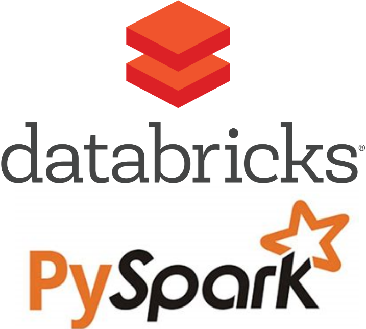

April 2024 - May 2024
Developed a real-time emotion detection system using CNNs on the FER-2013 dataset, implemented on a Jetson Nano for classroom facial expression analysis to enhance engagement and teaching effectiveness, with plans for integration into a classroom management system.


Conducted comprehensive data analysis, preprocessing, and visualization; developed a data transformation pipeline; and optimized machine learning models including Logistic Regression, Random Forest, and Decision Tree through hyperparameter tuning and cross-validation.

Used Spark RDD and SQL for in-depth data analysis and preprocessing, leading to decision tree classification and feature importance insights. Improved emergency response efficiency by targeting high-priority calls with PySpark for rapid pattern-based insights.

Applied five machine learning algorithms—Logistic Regression, Random Forest, SVM, KNN, and Naive Bayes—to predict customer churn in a telecom dataset, analyzed their performance, and provided actionable insights to telecom companies on churn strategies based on risk assessments.
Created a disease prediction system using Machine Learning algorithms (Naive Bayes and Decision Tree), featuring a GUI and chatbot for user-friendly symptom input and disease prediction, based on a detailed dataset for accurate early detection and intervention.

Visualization of data in Tableau